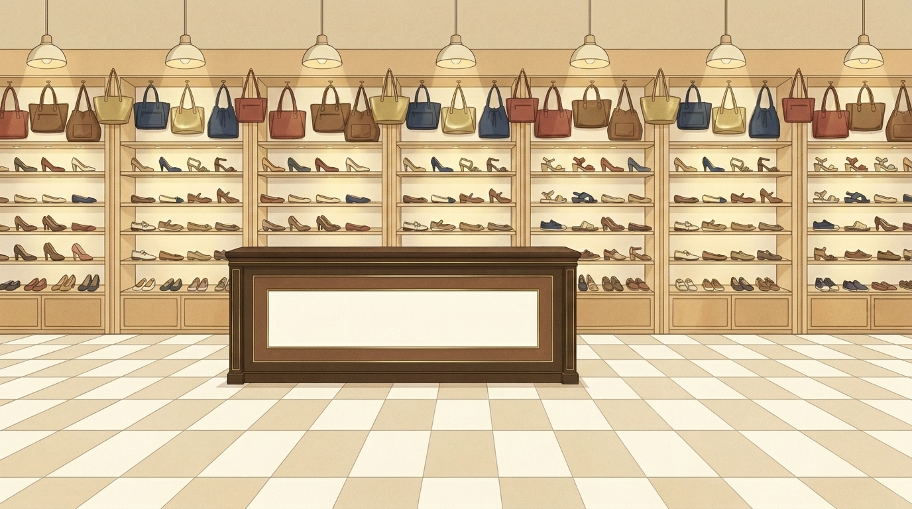

1 Outpaint the attached vertical illustration into a wide 16:9 landscape image of the same shop interior. Keep the existing drawing EXACTLY as it is and centred (same scale relative to image height, same shelves, bags, lamps, counter and tiled floor), and extend it naturally to the left and right with more of the same light wooden shelves with generic women shoes and hanging leather handbags, more pendant lamps and the same tiled floor; the wooden counter can continue a bit. Same style, lines, grain and palette. The lower half must stay calm and simple (it is a background behind text). No people, no text, no signs.

2 Outpaint the attached vertical illustration into a wide 16:9 landscape image of the same shop interior. Keep the existing drawing EXACTLY as it is and centred (same scale relative to image height, same shelves, bags, lamps, counter and tiled floor), and extend it naturally to the left and right with more of the same light wooden shelves with generic women shoes and hanging leather handbags, more pendant lamps and the same tiled floor; the wooden counter can continue a bit. Same style, lines, grain and palette. The lower half must stay calm and simple (it is a background behind text). No people, no text, no signs.